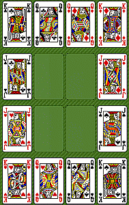

一层游戏类型。 1 副牌。不能重新发牌。
移除除图片牌（J、Q 和 K）之外的所有牌。如果您的 列牌区 如下所示，您就赢了 --

——你的库存和翻牌堆都是空的。西装并不重要。
这场比赛有两个阶段。在两个阶段之间交替，直到比赛输或赢。从第一阶段开始，直到 列牌区 完全填满。此时，进入第二阶段。请注意，除非 列牌区 完全填满，否则您无法开始第二阶段。在任何时候，您都可以返回到第一阶段，但请记住，除非画面再次被填满，否则您无法返回到第二阶段。此规则的一个例外是库存和翻牌堆为空。
第一阶段——点击库存将一张牌移至空的翻牌堆中。如果卡是：
第二阶段——通过点击 10 来单独删除它们。通过将一张卡拖到一对牌上来删除加起来为 10 的牌对。
中间总是最安全的。在游戏的第一阶段，先在中间发牌，然后再到边缘发牌。如果您看到可能的一对，则将该牌放在边缘，以便在游戏的第二阶段释放更多边缘空间。